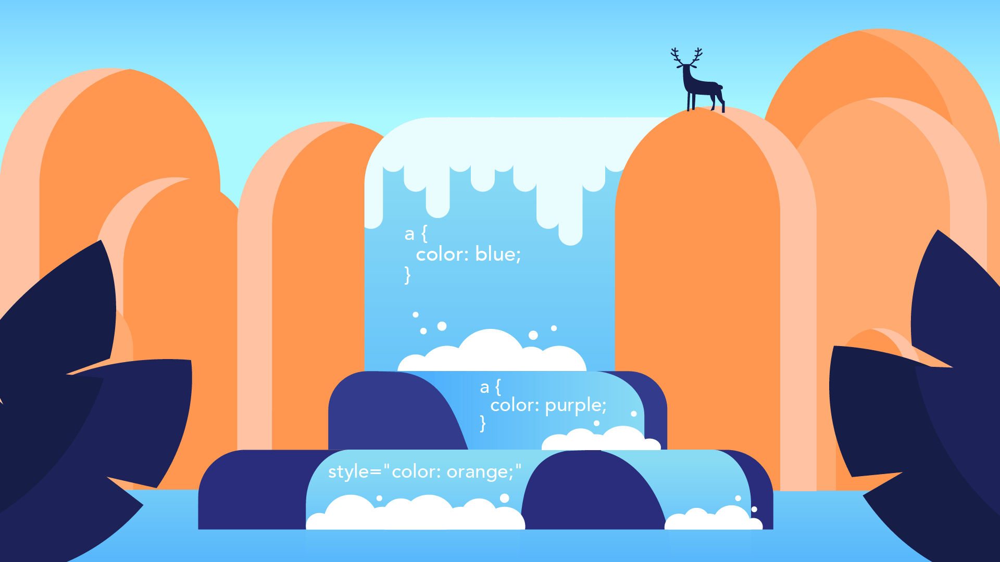

The Cascade Model specificity in CSS refers to the rules that determine which styles are applied to an element when conflicting styles are present. Here are some key applications of specificity in CSS:
Resolving Conflicts: Specificity helps in resolving conflicts when multiple CSS rules target the same element. The rule with the highest specificity will be applied.
Avoiding Global Styles: By using specific selectors, you can avoid unintentionally applying styles globally. This allows for more targeted styling, which is particularly useful in large projects.
Overriding Default Browser Styles: Specificity is crucial when overriding default browser styles. By using more specific selectors, you can ensure that your styles are applied as intended.
Modular and Scalable Styles: Specificity allows you to create modular and scalable stylesheets. By using classes and IDs judiciously, you can style elements based on their context without affecting other elements.
Conditional Styling: Specificity enables you to apply styles conditionally based on certain criteria. For example, you can use media queries to apply styles based on the screen size or orientation.

Understanding specificity in CSS is important for creating well-organized and maintainable stylesheets.